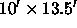
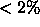
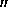
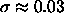
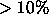

As mentioned above, the data stream from each CCD is divided into an overlapping series of  frames, for ease of processing; the frames pipeline (§ 4.4) will process these separately. However, in order to ensure continuity along the data stream, certain quantities need to be determined on timescales up to the length of the imaging run. The astrometric and photometric calibrations certainly fall into that category; in addition, the Postage Stamp Pipeline (psp) calculates a global sky for a field, flatfield vector, bias level, and the point-spread function (PSF).
Even in the absence of atmospheric inhomogeneities, the SDSS telescope
delivers images whose FWHMs vary by up to 15% from one side of a CCD
to the other; the worst effects are seen in the chips furthest from
the optical axis. Moreover, since the atmospheric seeing varies with
time, the delivered image quality is a complex two-dimensional
function even on the scale of a single frame.
An example of the instantaneous image quality across the imaging
camera is shown in Figure 7, where each rectangle
represents one chip .
.
The description of the point spread function (PSF) is critical for accurate PSF photometry, for star/galaxy separation, and for unbiased measures of the shapes of non-stellar objects; we need to map the full variation of the PSF even on scales of a single frame. The SDSS imaging PSF is modeled heuristically in each band using a Karhunen-Loève (KL) transform adass. In particular, using stars brighter than roughly 20th magnitude, we expand the PSF from a series of five frames into eigen-images, and keep the first three terms. We fit the variation of the coefficients multiplying these terms to second order in position across the chip, using data from the frame in question, plus the immediately preceding and following half-frames.
The success of this KL expansion is gauged by comparing PSF photometry based on the modeled KL PSFs to large aperture photometry for the same (bright) stars. The width of the distribution of these differences is typically 1% or less, which is thus an upper limit on the accuracy of the PSF photometry (not including calibration problems; see § 4.5). Without accounting for the spatial variation of the PSF across the image, the photometric errors would be as high as 15%. We have recently found a subtle dependence of the PSF width on stellar color in the g band; this affects PSF photometry at the  level, and will be addressed in future data releases.
Parameters that characterize one frame of imaging data are stored in the class Field (Table 16). The status parameter flag for each frame indicates the success of the KL decomposition; its possible values are given in Table 16. In particular, if the data do not support the fitting of a second-order term to the variation of the coefficients with position, a linear fit is carried out, and status is set to 1. If even this is not warranted by the data, the coefficients are set to be constants, and the status flag is set to 2. Finally, if no PSF stars are available at all, the PSF model is set to that of the previous frame, and status = 3. A more quantitative measure of the accuracy of the PSF fit on a given frame is given by the scatter in the difference between PSF magnitudes and aperture magnitudes, as reported in psfApCorrectionErr. Note that the actual KL values and the eigenshapes are not reported in the tables, so the shape of the PSF as a function of position within a CCD cannot be reconstructed based on the parameters included in this EDR.
The psp returns various measures of the PSF shape in addition to the KL decomposition, including parameters of the best-fit double-Gaussian, evaluated at the center of each frame. These are the psf2GSigma parameters in the Field class. The psfWidth is is the effective width also determined at the center of each frame. It is a good generic number to quote for the seeing on each frame. Figure 8 shows the psfWidth in r for each CCD column in each run of the EDR imaging data. Improvements in telescope collimation and thermal environment since these data were taken have given rise to substantially better seeing.
The psp calculates a PSF aperture correction for each field. We did not fully test this correction and did not properly apply it to the EDR. The quantity apCorrRunErr is the median value of the difference between psfMag and the aperture magnitude measured with a 7.43 radius aperture over the bright stars in the frame, and is a measure of the limitations of our KL decomposition of the PSF. This quantity is Gaussian-distributed with  mag, but apCorrRunErr can be as large as 0.1 mag in regions that the PSF is changing rapidly (FWHM changing by  on a single frame); adding it directly to the psfMag in the EDR improves the overall PSF photometry accordingly. This correction will be applied to the data correctly in future data releases of the SDSS data. apCorrRunErr is shown for each run in Figure 9, and we provide a table of these corrections on our web site.